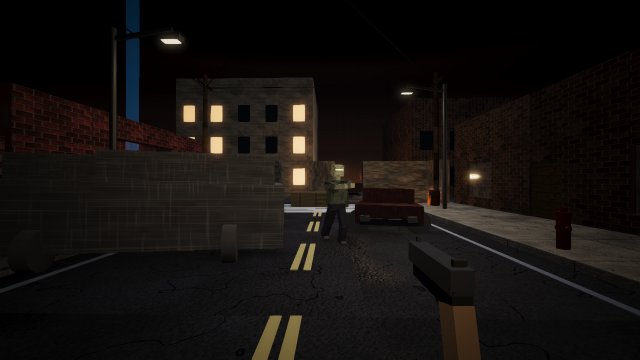

ZOMBIE SURVIVALASHFORD STREET - ROUND-BASED LAN CO-OP - 1 TO 4 PLAYERS

This game runs its own small local server (for LAN multiplayer), so it cannot start from this static page.
Open the folder
games/zombie-survival and run
START_GAME.bat (Windows) or
start_game.sh (macOS/Linux). The only requirement is
Node.js LTS.
PLAY WITH FRIENDS ON THE SAME WI-FI
- Everyone copies the
zombie-survival folder to their PC and runs START_GAME.bat.
- The host picks MULTIPLAYER → HOST GAME and names the lobby (e.g. Patrick's Game).
- Friends pick MULTIPLAYER → FIND LAN GAMES, see the lobby with players and ping, and click JOIN.
- Everyone presses READY; the host presses START GAME.
If Windows Firewall asks, click Allow access. No Internet or accounts are needed.
HOW IT PLAYS
- Survive endless rounds of zombies on a destroyed town street at night. Rounds scale forever.
- Earn points for hits, kills, headshots, barricade repairs and revives. Spend them on doors, wall weapons, ammo and the Mystery Box.
- 13 original weapons, temporary powerups, a stuffed bear that relocates the box, downed/revive mechanics, game-over stats.
CONTROLS
WASD move, mouse look, LMB shoot, RMB aim, R reload, E interact (hold to revive / repair), Space jump, Shift sprint, Ctrl/C crouch, 1/2/Q/wheel weapons, Esc pause. Everything is remappable in the game's settings.
← Back to the arcade